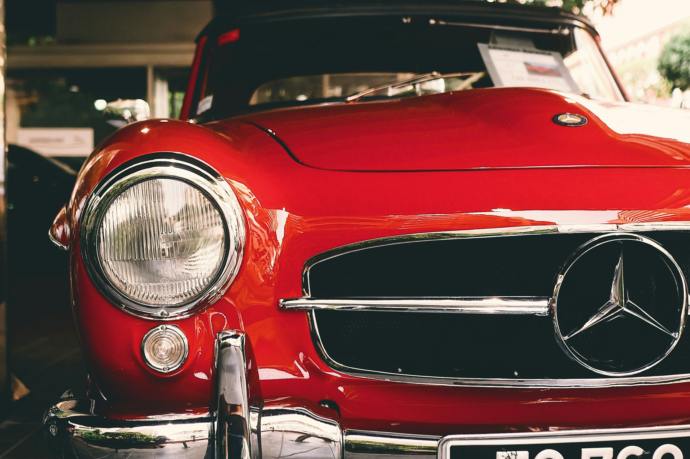

About Mercedes-Benz
History, Mission and more.

Mercedes-Benz is a German global automobile marque and a division of Daimler AG. Established in 1926, Mercedes-Benz has been at the forefront of automotive innovation and luxury design for nearly a century.
Known for its commitment to excellence, Mercedes-Benz offers a range of high-end vehicles that prioritize safety, luxury, and performance.
History of Mercedes Benz
Short introduction to the history of Daimler and Mercedes-Benz
Mercedes-Benz traces its origins to Karl Benz's creation of the first petrol-powered car, the Benz Patent Motorwagen, in January 1886. The Mercedes automobile was first marketed in 1901 by Daimler-Motoren-Gesellschaft.
The company has a long-standing reputation for producing world-class luxury vehicles and maintaining an unwavering focus on innovation, quality, and design.
Mission Statement
Our commitment to excellence
Mercedes-Benz is committed to providing customers with the highest quality vehicles that are safe, reliable, and luxurious. Our mission is to create innovative, high-performance cars that exceed customer expectations and set new standards for the automotive industry.
At Mercedes-Benz, we believe in the power of design, engineering, and technology to create vehicles that inspire and delight our customers. We are dedicated to delivering the best or nothing.